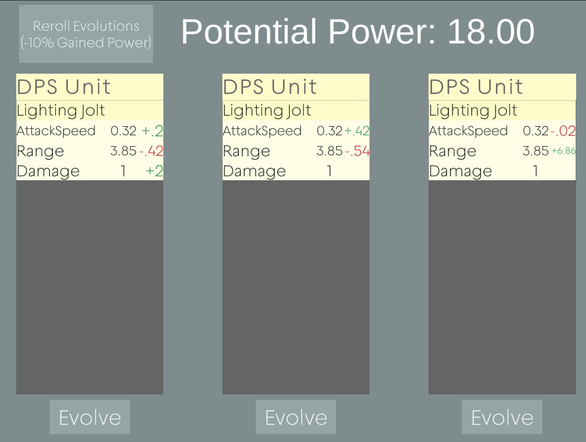
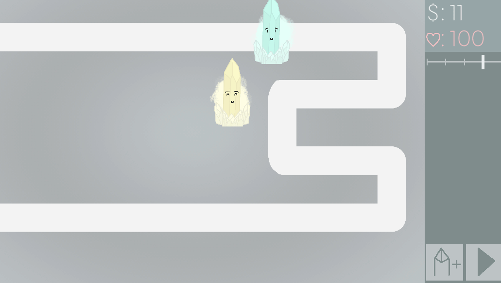

CrystaLine
Tower Defense with a Twist
A common issue in the tower defense genre is routine. After playing for a little while, players will start to get comfortable with a few specific strategies and it is difficult to make them branch out and try other options.
In a normal tower defense, you choose from a list of upgrades for each unit. Even if you wanted to adapt to a situation, you are discouraged because it's more efficient to just keep upgrading what you already have than getting something else from scratch. That is the problem I hope to solve with this game. I present,
The Evolution System!

All units are randomly generated. They have a random collection of moves, all with a random collection of stats. In order to improve your units, you roll 3 options for potential evolutions and have to decide which will be the most beneficial to you.

CrystaLine is still in active development, for more info, checkout the Itch.Io page here!